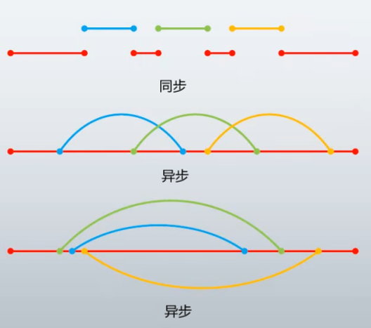

# CSharp 多线程
每一个运行的程序是一个进程，每个进程可以有一个或者多个线程。
在单核系统的一个单位时间内 ，CPU 只能运行单个线程，运行顺序取决于线程的优先级。如果在单位时间内线程未能完成执行，系统就会把线程的状态信息保存到线程的本地储存器（TLS）中，以便下次执行时恢复执行。因为 CPU 的处理速度很快，所以我们感知不到停顿。因为切换频密，所以多线程可被视作同时运行，而实际上这是假象。
在多核系统的一个单位时间内，进程或线程可以在不同的 CPU 中运行，实现真正的并行处理。
# 线程生命周期
线程生命周期开始于 System.Threading.Thread 类的对象被创建时，结束于线程被终止或完成执行时。
下面列出了线程生命周期中的各种状态：
- 未启动状态（创建状态）：当线程实例被创建但 Start 方法未被调用时的状况（线程被创建时会先分配资源，包括内存空间和线程上下文等）。
- 就绪状态：当线程准备好运行并等待 CPU 周期时的状况（在就绪队列中，多个线程可以按照优先级等待 CPU 的分配）。
- 运行状态：当线程获得 CPU 时间片后，它就会进入运行状态，开始执行线程的代码。在运行状态中，线程会不断执行指令，直到遇到阻塞操作、时间片用尽或调度器切换到其他线程。
- 阻塞状态（不可运行状态）：线程可能会因为某些原因暂时无法继续执行，例如等待资源释放、等待输入输出操作完成等。当线程处于阻塞状态时，它不会占用 CPU 时间片，直到满足进一步执行的条件。
下面的几种情况下线程是不可运行的：- 已经调用 Sleep 方法
- 已经调用 Wait 方法
- 通过 I/O 操作阻塞
- 死亡状态（终止状态）：当线程已完成执行或已中止时的状况。
可以通过以下两种方式终止线程：- 线程的主体代码执行完毕。
- 显式调用 Thread 类的 Abort () 方法来中止线程。
线程的生命周期并不是线性的，线程在不同的状态之间会进行切换。例如，一个线程可能从就绪状态进入运行状态，然后再由于等待某个条件而进入阻塞状态，最后再返回就绪状态等待调度器重新分配 CPU 时间片。
# 同步和异步

同步调用与异步调用的对比
- 同步调用是在同一线程内
- 异步调用的底层机理是多线程
- 并发 / 串行 = 同步 = 单线程，并行 = 异步 = 多线程
# 主线程
进程中第一个被执行的线程称为主线程。当 CSharp 程序开始执行时，主线程自动创建，使用 Thread 类创建的线程都是子线程。可以使用 Thread.CurrentThread 访问当前的线程。
# Thread
- 通过 Thread 对象的 Start () 开启，由操作系统抢占式调度，到达分配时间后暂停执行，无法预测执行时机
- 共享堆，不共享栈，访问共享数据时，存在并发冲突
- 线程具备内核对象、环境块、DLL 线程链接和线程分离通知、用户模式栈、内核模式栈等元素，所以开启或关闭线程的性能消耗较大
# 前 / 后台线程
- 前台线程：程序必须等待所有前台线程结束后才能退出（Thread 创建的线程的默认值）
- 后台线程：程序不考虑后台线程，后台线程随程序退出而结束（ThreadPool 创建的线程的默认值）
# 线程同步
- 多个线程同一时刻访问共享资源，结果将产生不可预知的数据破坏。
- 使用线程锁可以使线程之间相互等待排队执行，能够有效解决问题。
- 线程锁是解决方案之一。
# 代码讲解
# 线程基础
public class Program | |
{ | |
/// <summary> | |
/// 线程事件，相当于信号灯，true：允许线程执行（绿灯） | |
/// </summary> | |
private static ManualResetEvent Signal = new ManualResetEvent(true); | |
public static void Main() | |
{ | |
// 创建线程 | |
Thread thread_0 = new Thread(Fun_0); | |
// 设置为后台线程 | |
thread_0.IsBackground = true; | |
// 开启线程 | |
//Start () 让线程处于运行状态，等待 CPU 的调度，不是让线程运行 | |
thread_0.Start(); | |
// 阻止调用线程，直到该实例表示的线程终止 | |
// 在这个例子中，调用 Main () 方法的是主线程，在 thread_0 线程执行完成之前，主线程将进入阻塞状态 | |
thread_0.Join(); | |
// 它的本质是抛异常，强行使程序中断 | |
thread_0.Abort(); | |
} | |
private static void Fun_0() | |
{ | |
// 让调用这个方法的线程睡眠（单位：毫秒） | |
Thread.Sleep(1000); | |
//Signal.Reset (); // 红灯 | |
//Signal.Set (); // 绿灯 | |
for (int i = 0; i < 10; i++) | |
{ | |
// 判断是否允许线程执行 | |
Signal.WaitOne(); | |
// 线程睡眠 | |
Thread.Sleep(100); | |
Console.WriteLine(i); | |
} | |
} | |
} |
# 线程池
线程池（ThreadPool）是一种用于管理和复用线程的机制。它允许你在应用程序中创建多个任务，并将它们分配给可用的线程来执行，从而提高应用程序的性能和资源利用率。
使用线程池，你无需显式地创建和销毁线程，而是通过将任务提交到线程池来自动管理线程的生命周期。线程池中的线程会在任务完成后返回到线程池，等待下一个任务的分配。
线程池适用于一些短暂的、非阻塞的任务。如果你的任务涉及长时间的阻塞操作或需要精确的线程控制，你可能需要考虑使用自己创建的线程。
创建线程
// 要求方法必须有参数 object state | |
//ThreadPool.QueueUserWorkItem(Fun_0); | |
// 这种写法可以不让方法带参数 | |
ThreadPool.QueueUserWorkItem((object state) => { Fun_0(); }); |
使用等待句柄管理任务完成：
//ThreadPool.RegisterWaitForSingleObject 方法允许你注册一个等待句柄，以便在任务完成时得到通知 | |
RegisteredWaitHandle waitHandle = ThreadPool.RegisterWaitForSingleObject(waitableObject, CallbackMethod, state, timeout, executeOnlyOnce); |
控制线程池的大小：
// 通过 ThreadPool.SetMaxThreads 和 ThreadPool.SetMinThreads 方法可以设置线程池的最大线程数和最小线程数 | |
ThreadPool.SetMaxThreads(maxWorkerThreads, maxCompletionPortThreads); | |
ThreadPool.SetMinThreads(minWorkerThreads, minCompletionPortThreads); |
# 线程锁
- 使用 lock (locker){} 实现线程锁，locker 必须是引用类型，{} 中的区域称之为：临界区
- 当程序运行到 lock (locker){} 后，判断 locker 对象的同步块索引是否为 - 1，如果是 - 1，则进入程序并改变索引，如果不是 - 1，则等待它变为 - 1
- 同步块索引默认值为 - 1，索引指向同步块数组。同步块数组在应用程序中通常是全局共享的。
- 在同步块数组中，每个元素都有一个对应的锁对象，当线程需要访问该元素时，需要先获取该元素对应的锁，完成访问后再释放锁。
- lock (locker){} 退出后，恢复同步块索引为 - 1
public class Program | |
{ | |
private static int test = 2; | |
/// <summary> | |
/// 用于处理线程锁 | |
/// 必须是引用类型 | |
/// </summary> | |
private static object locker = new object(); | |
private static void Main() | |
{ | |
ThreadPool.QueueUserWorkItem(state => { RunTest(1); }); | |
ThreadPool.QueueUserWorkItem(state => { RunTest(1); }); | |
ThreadPool.QueueUserWorkItem(state => { RunTest(1); }); | |
Thread.Sleep(3000); | |
} | |
/// <summary> | |
/// 线程锁测试 | |
/// </summary> | |
/// <param name="a"></param> | |
private static void RunTest(int a) | |
{ | |
lock (locker) | |
{ | |
Thread.Sleep(500); | |
if (test >= a) | |
{ | |
test -= a; | |
Console.WriteLine("true:" + test); | |
} | |
else | |
{ | |
Console.WriteLine("false: " + test); | |
} | |
} | |
} | |
} |